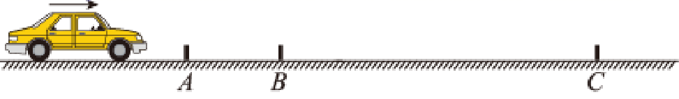
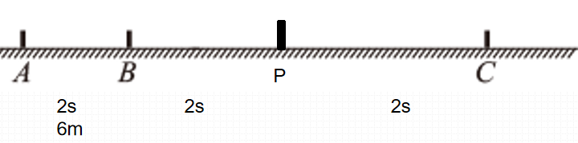

解决匀变速直线问题的一般方法
- 一辆汽车在笔直的公路上做匀变速直线运动，该公路安置三个路标A、B、C。A、B 间距s_{1}=6m, B、C间距s_{2}=24m。汽车通过A、B两相邻路标用了t_{1}=2s, 通过B、C两相邻路标用了t_{2}=4s。求：
(1)汽车通过A、C路标间距的平均速度大小；
(2)汽车的加速度大小及汽车通过A、B、C各路标时的速度大小。
 ① ② ③ ④ ⑤ ⑥ ⑦ ⑧ ⑨ ⑩
解法一:基本式
A\rightarrow B:s_1=v_At_1+\frac{1}{2}at_1^2 \quad
A\rightarrow C:s_1+s_2=v_A(t_1+t_2)+\frac{1}{2}a(t_1+t_2)^2\quad
联立①②方程组，解得:v_A=2m/s,a=1m/s^2
v_B=v_A+at_1=4m/s,v_c=v_A+a(t_1+t_2)=8m/s
解法二:平均速度=中间时刻速度
v_{1s末}=\bar{v}_{AB}=3m/s
v_{4s末}=\bar{v}_{BC}=6m/s
a=\frac{\Delta v}{\Delta t}=1m/s^2
v_A=v_{1s末}-a\frac{t_1}{2}=2m/s
解法三:位移差公式
BC段分为等时的两段BP,PC，则由位移差公式可得 
x_{BP}-s_1=x_{PC}-x_{BP}
x_{BP}+x_{PC}=s_2
解得x_{BP}=10m,x_{PC}=14m \Delta x=x_{BP}-x_{AB}=at_1^2
解得 a=1m/s^2
3.如图，一质点从 A点开始做初速度为零 的匀加速直线运动，加速度大小为 a ， B 、 C 、 D 是质点运动路径上的三个点， 且 BC=x_1 ， CD=x_2 ，质点通过BC 段所用时间是通过CD 段所用时间的一半， 则质点经过C 点时的速度大小和 A 、 B 间的距离为( )

A.质点经过 C 点时的速度大小为 \frac{x_1+4x_2}6\sqrt{\frac{3a}{x_2-2x_1}}
B.质点经过 C 点时的速度大小为\frac{4x_1+x_2}6\sqrt{\frac{3a}{x_2-2x_1}}
C. A 、 B 间的距离为 \frac{(8x_{1}-x_{2})^{2}}{24(x_{2}-2x_{1})}
D. A 、 B 间的距离为 \frac{(8x_{1}-x_{2})^{2}}{12(x_{2}-2x_{1})}
解：设BC段时间为t，则CD段时间为2t。
B-C:v_Bt_0+\frac{1}{2}at_0^2=x_1 \quad(1)
B-D:v_B\cdot 3t_0+\frac{1}{2}a(3t_0)^2=x_1+x_2\quad(2)
(2)-3*(1)\rightarrow at_0^2=\frac{x_2-2x_1}{3}\quad(3)
9*(1)-(2)\rightarrow v_Bt=\frac{8x_1-x_2}{6}\quad(4)
t_0=\sqrt{\frac{x_2-2x_1}{3a}},\quad v_B=\frac{8x_1-x_2}{6t_0}=\frac{8x_1-x_2}{6}\sqrt{\frac{3a}{x_2-2x_1}}
x_{AB}=\frac{v_B^2}{2a}=
逆向思维
- 疫情期间，武汉小汤山医院7天内建成，见证了中国速度。在建筑工地上一卡车以速度10m/s匀速行驶，刹车后第1个2s内的位移与最后一个2s内的位移之比为3∶2，设卡车做匀减速直线运动，则刹车后4s内卡车通过的距离是（ ）
A.2.5m B.4m C.12.5m D.25m
解：
第一个2s内位移3s=v_0*2-\frac{1}{2}a\cdot2^2
最后一个2s内位移，逆向思维，看成初速度为0的反向加速运动： 2s=\frac{1}{2}a\cdot2^2
解得 s=4m,a=4m/s^2
v_0=10m/s,t=2.5s停下，因此4s内位移：x=\frac{v_0^2}{2a}=12.5m
注意逆向思维：匀减速至0的运动可以看成反向的初速度为0的匀加速运动解决问题